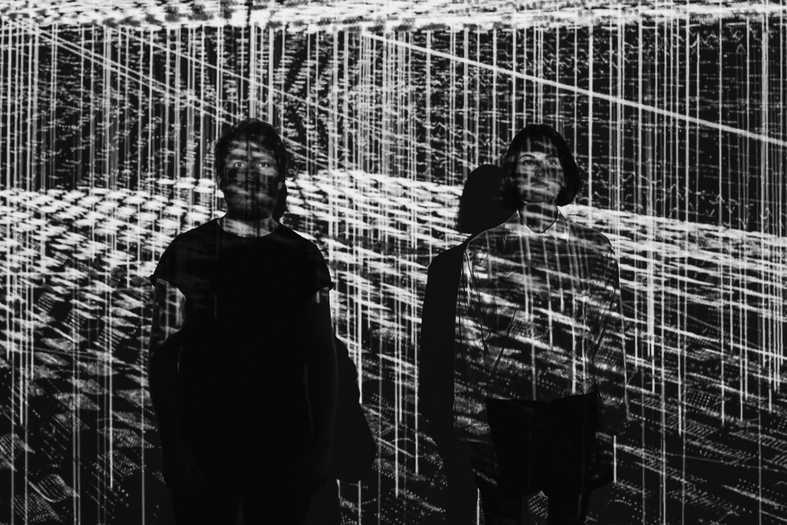
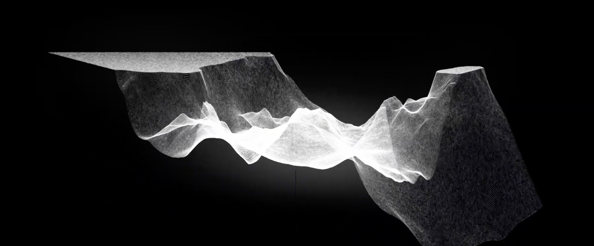
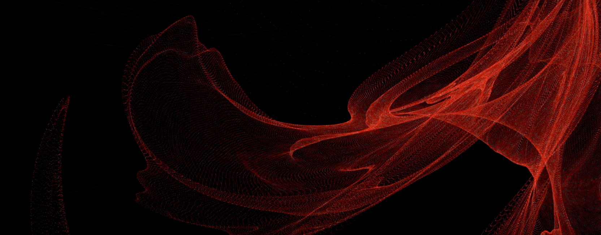
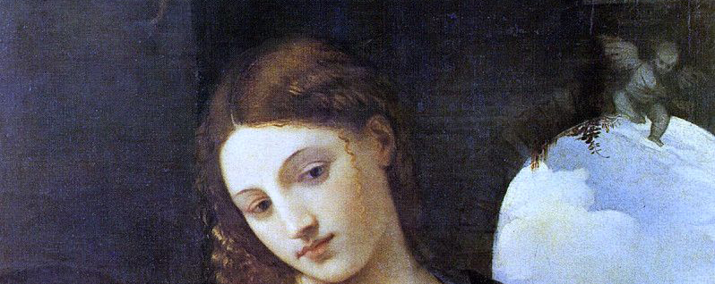
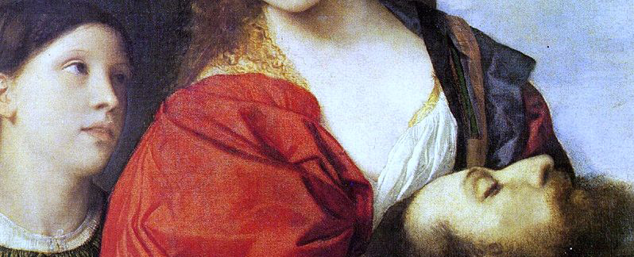
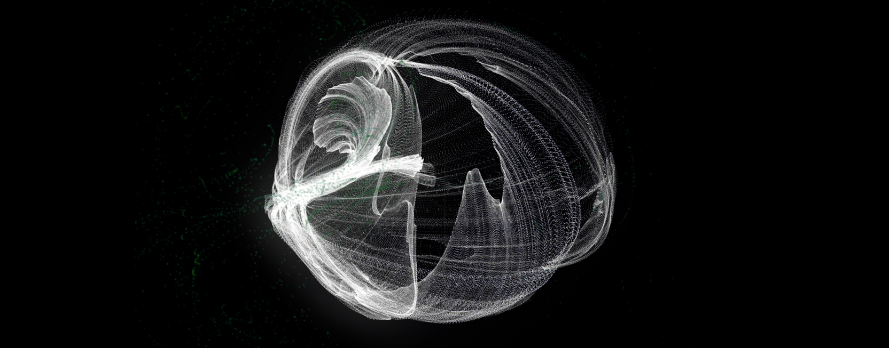
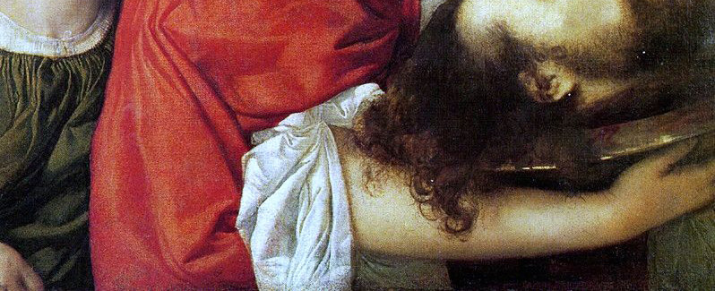
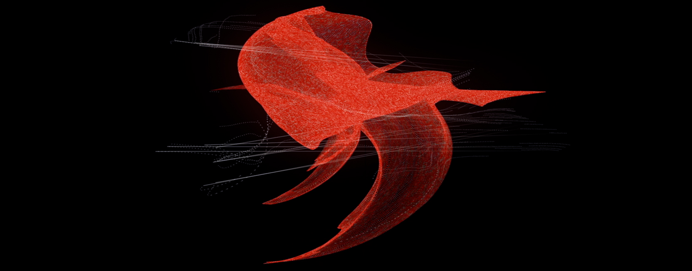

Alberto Barberis _ elettronica, visuals
Elena Rivoltini _ arrangiamento vocale, voci
Rajan Craveri _ algoritmi 3D
Elena Rivoltini _ arrangiamento vocale, voci
Rajan Craveri _ algoritmi 3D


Oratorio virtuale è un rework A/V elettroacustico dell'oratorio San Giovanni Battista, opera musicale sacra composta nel 1675 da Alessandro Stradella.
Due musicisti, un tavolo console e un video 3D proiettato alle loro spalle. Un assetto scenografico molto semplice. Musica elettronica. Voce lirica.
Un algoritmo, che traduce le informazioni sonore in output visivo: una correlazione diretta tra ciò che si vede e ciò che si sente.
Elena canta le arie dal vivo, in stile lirico barocco. La sua voce, processata in tempo reale da Alberto, viene così integrata in un ricco universo sonoro elettroacustico e noise, che ne è al contempo un’espansione e una negazione. Alle parti cantante si alternano parti recitate al microfono, una rivisitazione moderna del recitativo, tratte dal libretto originale dell’oratorio.
La vicenda narrata è quella del profeta San Giovanni Battista, decapitato per volere di Salomé. Nella scena finale, la principessa regge la testa sanguinante del profeta su un piatto e ripete tramortita la sua stessa condanna: «La sua testa su un vassoio d'argento: questo è quello che desidero. Voglio ch’ei mora».
La performance è un live: ogni elemento sonoro viene creato al momento e fatto interagire con il contesto visivo, testuale, mimico. Lo spettatore vive un’esperienza immersiva sinestetica, che fonde suono e visione.
Commissionato dall'Eutopia Ensemble e Forevergreen.fm l'opera è stata presentata nella sua prima versione ad Electropark 2019, Le Strade del Suono e Le vie del Barocco (16 ottobre 2019 a Villa del Principe, Genova - IT).
Elena canta le arie dal vivo, in stile lirico barocco. La sua voce, processata in tempo reale da Alberto, viene così integrata in un ricco universo sonoro elettroacustico e noise, che ne è al contempo un’espansione e una negazione. Alle parti cantante si alternano parti recitate al microfono, una rivisitazione moderna del recitativo, tratte dal libretto originale dell’oratorio.
La vicenda narrata è quella del profeta San Giovanni Battista, decapitato per volere di Salomé. Nella scena finale, la principessa regge la testa sanguinante del profeta su un piatto e ripete tramortita la sua stessa condanna: «La sua testa su un vassoio d'argento: questo è quello che desidero. Voglio ch’ei mora».
La performance è un live: ogni elemento sonoro viene creato al momento e fatto interagire con il contesto visivo, testuale, mimico. Lo spettatore vive un’esperienza immersiva sinestetica, che fonde suono e visione.
Commissionato dall'Eutopia Ensemble e Forevergreen.fm l'opera è stata presentata nella sua prima versione ad Electropark 2019, Le Strade del Suono e Le vie del Barocco (16 ottobre 2019 a Villa del Principe, Genova - IT).







Copyright ©2020 Alberto Barberis. All rights reserved.